FROM FIELDS
TO CITIES
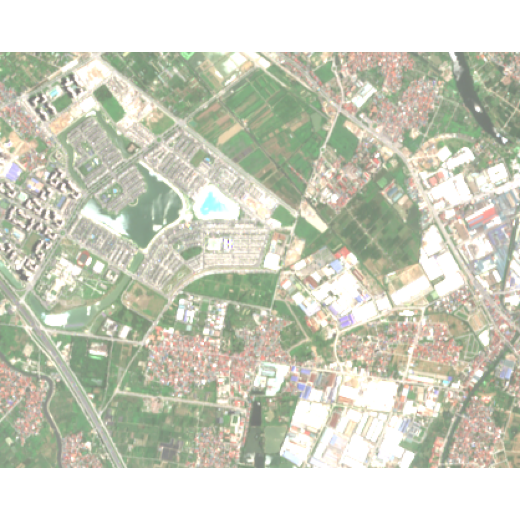
What changed from v1 to v2
| Part | Status | Slides |
|---|---|---|
| Context, What, Why, Where, scaling, question, hypotheses | SAME AS v1 | unchanged |
| Literature review: 9 papers, labels, journey, pipelines, evaluation | NEW | 18 slides |
| How: pipelines and parameters for H1 to H6 | NEW | 7 slides |
| Data, tools, validation, plan, team, schedule, questions | SAME AS v1 | unchanged |
The literature review suggests edits to v1 (windows, H3 and H6 wording). They are listed as proposals in the review block; the v1 slides were not edited.
Context: urbanisation around Ocean Park

What: the object of study
Why: the reasons for this study
- Data gap: Hanoi has no public map of when construction projects start and finish (the group's assessment, to be confirmed). Earth observation is the only way to look back in time
- New lakes: cooling studies of Hanoi lakes use old lakes such as West Lake; new lakes inside a fast-urbanising area allow a before-and-after comparison
- Health and environment: construction dust and urban heat matter, but their link with measured values is untested here
- Reusable method: free data, reproducible code, validation with enough samples
Why: new lakes inside farmland
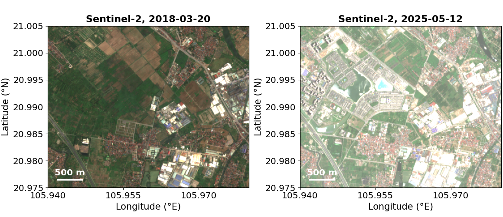
Literature review: scope and method
- 9 distinct papers (11 files: two are duplicates), picked by hand around Hanoi and Gia Lam, 1992-2026
- Read in full: 8 with a text layer, 1 scanned paper read through OCR (tables to re-check)
- For each paper: area, period, data, algorithm, task, numbers, limits
- Numbers are re-checked by arithmetic inside each paper; source data were not re-run
- Not a systematic review: the absence of a topic means not found here, not that nobody did it
Three research labels for the papers
| Paper | Venue | SJR quartile | Label |
|---|---|---|---|
| P1 Le Phu Tuan 2025a | J. Forestry Science and Technology | not ranked | L3 |
| P2 Le Phu Tuan 2025b | J. Forestry Science and Technology | not ranked | L3 |
| P3 Nguyen 2020 | Environment and Natural Resources | not found in table; check | L2 or L3, to verify |
| P4 Le Thi Lan 2026 | IOP Conf. Ser.: Earth Environ. Sci | proceedings | L3 |
| P5 Le Thi Thu Hang 2026 | Vietnam J. of Earth Sciences | not found in table; check | L3 (local) |
| P6 Li 2019 | Forests | SJR 0.59-0.60 (2023-24); Q1 expected | L1 (to verify) |
| P7 Tran 2024 | IOP Conf. Ser.: Earth Environ. Sci | proceedings | L3 |
| P8 Nghiem 2020 | IOP Conf. Ser.: Mater. Sci. Eng. | proceedings | L3 |
| P9 Truong 2024 | Environmental Research Communicati | SJR 0.78-0.80 (2023-24); Q1 or Q2 expected | L1 (to verify) |
L1 = Q1 or Q2 · L2 = Q3 or Q4 · L3 = local scientific papers and other venues. Quartiles are provisional and need a check in SCImago or Web of Science (JCR); they are not official.
The 9 papers at a glance
| ID | Authors, year | Area | Period | Topic |
|---|---|---|---|---|
| P1 | Le Phu Tuan et al. 2025a | Gia Lam, Thanh Tri | 2000-2020 | Urbanisation (UI, UX) |
| P2 | Le Phu Tuan et al. 2025b | Gia Lam, Thanh Tri | 2000-2020 | Surface-water change |
| P3 | Nguyen 2020 | Central Hanoi | 1996-2016 | Heat island, Landsat |
| P4 | Le Thi Lan et al. 2026 | Thanh Tri | 2019, 2024 | LST by land cover, GEE |
| P5 | Le Thi Thu Hang et al. 2026 | Hanoi | 2021-2025 | Urbanisation and air pollution |
| P6 | Li et al. 2019 | Beijing | 1992-2016 | Green-space fragmentation |
| P7 | Tran et al. 2024 | Hanoi | 2021-2023 | Motorcycle emissions |
| P8 | Nghiem et al. 2020 | Hanoi | 2016-2018 | Demolition waste |
| P9 | Truong 2024 | 3 districts | 2023 | Solar heater survey |
Research journey: clusters around milestones
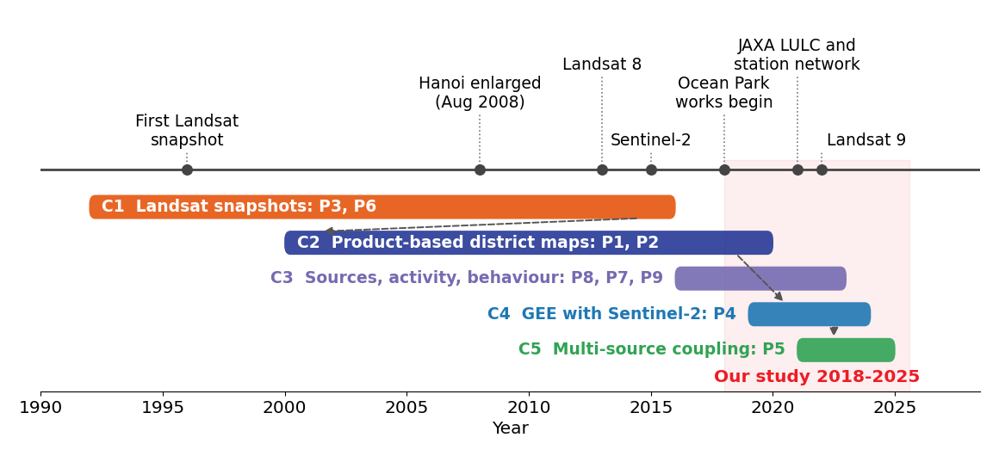
Cluster C1: Landsat snapshots (P3, P6)
- Milestone: first Landsat dates, 1992-2016; 3 to 4 images per paper
- P3: LST by radiative transfer, then regression on NDVI and NDBI; built-up accuracy 89.3% (kappa 0.79)
- P6 (Beijing): green-space metrics LPI and LSI, night lights, GWR
- Numbers: mean LST 26.45, 38.81, 42.93 °C (P3); green LPI 21.41 to 4.42 (P6)
- We take: remove water pixels in LST regressions; scale-dependence of landscape metrics
- Caution: P3 compares different months (Sep, May, Jun), so part of the 16 °C rise is weather
- P6 counts cropland as green space; we keep it separate
Cluster C2: ready-made maps (P1, P2)
- Milestone: JAXA 30 m land cover 1990-2020, used for 3 dates
- Gia Lam urban land: 1,027 ha (2000), 1,681 (2010), 2,468 (2020)
- Gia Lam water: 675, 1,037, 681 ha; only 57 ha new water in 2010-2020, 413.8 ha lost
- Named: Vinhomes Ocean Park before 2020
- We take: a baseline to 2020 and UI and UX indices for comparison
- Caution: absolute growth rose (654, then 787 ha) while UX fell
- Water includes aquaculture ponds; 30 m
Clusters C4 and C5: cloud and multi-source
- P4 (2019, 2024, Thanh Tri): Sentinel-2 SVM in GEE, OA 83.06% and 91.49%; built land is 6.3 °C hotter than farmland
- P5 (2021-2025, Hanoi): Landsat, MODIS AOD, 11 stations, ERA5
- P5: AOD vs PM2.5 R² is 0.16 pooled and 0.78 with station effects
- We take: same toolchain as P4; admit one date per year as P4 does
- Caution P5: +68% built-up comes from a 2021 window change; the area-vs-AOD fit uses 5 points
- Caution P5: construction sites are not resolved by 1 km AOD (their own limit)
Cluster C3: sources and behaviour (P7, P8, P9)
- P7: motorcycles emit 5,261 t of PM per year in Hanoi (model, not measured air)
- P8: only city-level floor area per year; waste often dumped into lakes
- P9: household survey on solar water heaters; no link to our topic
- We take: traffic as a confounder for H6; no public project timeline (P8)
- Caution P8: Table 3 implies 0.72 t/m², text says 0.499 t/m²
- P9 can be dropped
Pipelines: land cover and heat (P1 to P4)
Pipelines: air, green space, sources (P5 to P8)
Algorithms used by the papers
| Method | P1 | P2 | P3 | P4 | P5 | P6 | P7 | P8 | P9 |
|---|---|---|---|---|---|---|---|---|---|
| Supervised classifier (RF or SVM) | ○ | ○ | ● | ● | |||||
| Spectral index thresholds | ● | ○ | ● | ||||||
| Urban indices UI and UX | ● | ||||||||
| Transition matrix or change detection | ○ | ● | ○ | ○ | ○ | ● | |||
| LST retrieval (RTM or single channel) | ● | ● | |||||||
| Linear regression (OLS) | ● | ● | ○ | ● | |||||
| Fixed effects or GWR | ● | ● | |||||||
| Landscape metrics (FRAGSTATS) | ● | ||||||||
| Moran's I | ● | ||||||||
| MAIAC AOD, ERA5, night lights | ○ | ● | ● | ||||||
| Emission or waste model | ● | ● | |||||||
| Questionnaire or interviews | ○ | ● | ○ | ○ | ● | ● | ● |
● main element · ○ minor or inherited from a data product
Tasks performed by the papers
| Task | P1 | P2 | P3 | P4 | P5 | P6 | P7 | P8 | P9 |
|---|---|---|---|---|---|---|---|---|---|
| Land-cover mapping | ○ | ○ | ○ | ● | ● | ● | |||
| Change detection | ● | ● | ○ | ○ | ○ | ● | |||
| Retrieval (LST, AOD) | ● | ● | ● | ||||||
| Statistical association | ● | ○ | ● | ● | ● | ||||
| Prediction or projection | ○ | ● | |||||||
| Validation with ground data | ○ | ● | ○ | ● | |||||
| Source inventory or modelling | ● | ○ | |||||||
| Field survey or interviews | ○ | ● | ○ | ○ | ● | ● | ● |
Research interests of the papers
| Interest | P1 | P2 | P3 | P4 | P5 | P6 | P7 | P8 | P9 |
|---|---|---|---|---|---|---|---|---|---|
| Urbanisation, land-cover change | ● | ○ | ○ | ● | ● | ○ | |||
| Surface water and lakes | ○ | ● | ○ | ○ | |||||
| Surface heat (LST, UHI) | ● | ● | |||||||
| Green-space structure | ○ | ● | |||||||
| Air quality (AOD, PM2.5) | ● | ○ | |||||||
| Emissions and traffic | ○ | ● | |||||||
| Construction and demolition | ○ | ○ | ● | ||||||
| Planning and policy advice | ○ | ● | ○ | ● | ○ | ● | |||
| Human behaviour, energy | ● | ||||||||
| Gia Lam named as a unit | ● | ● | ○ | ○ |
Results compared across papers
| Item | Value | Paper |
|---|---|---|
| LST built-up vs farmland | +6.3 °C in 2019 and 2024 (single dates) | P4 |
| LST built-up vs water | +14.1 and +15.3 °C | P4 |
| Gia Lam urban land 2000 to 2020 | 1,027 to 2,468 ha (30 m) | P1 |
| Gia Lam water 2010 to 2020 | net -356.8 ha; 57 ha new | P2 |
| Thanh Tri built-up 2019 to 2024 | +426 ha | P4 |
| Map accuracy (overall) | 82 to 92% across P1, P3, P4, P5 | P1,3,4,5 |
| AOD vs PM2.5 pooled R² | 0.16; 0.78 with station effects | P5 |
Inconsistencies found in the papers
| Where | Issue |
|---|---|
| P2 summary | Gia Lam water 2000-2010: +378 ha in text, +362 ha from its own tables |
| P1 text | Water 68 ha in text, 681 ha in Table 2 |
| P1 and P4 | Thanh Tri water 229 ha (JAXA, 2020) vs 1,012 ha (SVM, 2019) |
| P5 abstract | +68% built-up is a window change; 2022 to 2025 falls 11% |
| P5 AOD | AOD +93% while PM2.5 +27% |
| P8 Table 3 | 0.72 t/m² used, text gives 0.499 t/m² |
What is already done and what is not
| Component of our project | Status | Evidence |
|---|---|---|
| H1 conversion in Gia Lam | Done | to 2020 at 30 m (P1, P2) |
| H1 after 2020, at 10 m | Not found | none for Gia Lam |
| Area corrected for map error | Not found | raw areas only |
| H2 heat of converted land | Partly | single-date contrasts (P3, P4) |
| H3 cooling by new lakes | Not found | only water area and LST by class |
| H4 fragmentation | Partly | Beijing only (P6) |
| H5 near projects | Not found | no public project data (P8) |
| H6 dust near sites | Partly | city-level AOD (P5) |
"Not found" means not in these 9 papers; no wider search was run.
What we do not need to redo
- Land-cover products for 2000-2020: JAXA maps and their district statistics exist (P1, P2)
- Own thermal retrieval by radiative transfer or FLAASH: the Landsat Level-2 product is enough
- Night lights and AOD retrieval: too coarse for an 8 km study area
- Behaviour surveys and emission inventories: context only (P7, P9)
What the literature suggests for our plan
| Hypothesis | Suggested change (v1 not edited) |
|---|---|
| H1 | Add UI and UX and absolute hectares; expect a few km² in the ROI |
| H2 | Use P4 contrasts (about 6 °C) as expected size; open the window to April-September |
| H3 | Count the new lakes first; with few lakes it is a case study; drop water pixels in regressions |
| H4 | Fix the minimum mapping unit; test scale sensitivity; keep cropland out |
| H6 | Use 2021-2025 only (stations start 2020-21); add distance to roads as a confounder |
| All | Report area-adjusted estimates: a 13% change sits inside 83-88% map accuracy |
Where 1: Gia Lam, the test area
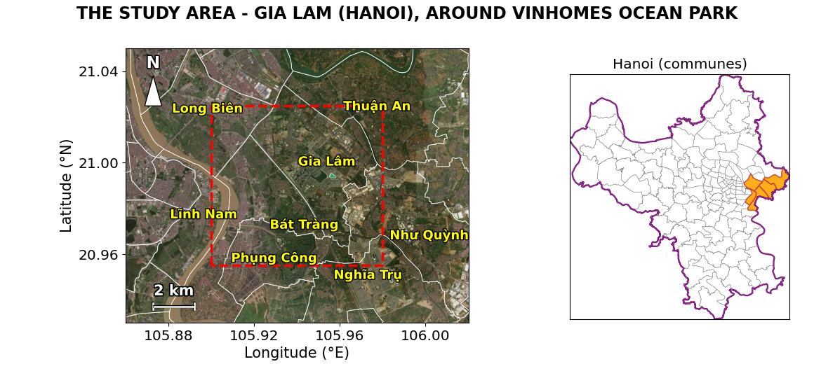
Where 1: what the ROI covers
| Commune or ward | Province | Share of ROI |
|---|---|---|
| Gia Lâm (commune) | Hanoi | 33.5% |
| Bát Tràng (commune) | Hanoi | 22.3% |
| Phụng Công (commune) | Hung Yen | 14.8% |
| Như Quỳnh (commune) | Hung Yen | 9.4% |
| Long Biên (ward) | Hanoi | 8.7% |
| Thuận An (commune) | Hanoi | 5.9% |
| Lĩnh Nam (ward) | Hanoi | 3.2% |
| Nghĩa Trụ (commune) | Hung Yen | 2.2% |
About 74% of the ROI is in Hanoi and 26% in Hung Yen. There is no district level after 2025: the ROI is a bounding box, not "Gia Lam district".
Where 2: Hanoi
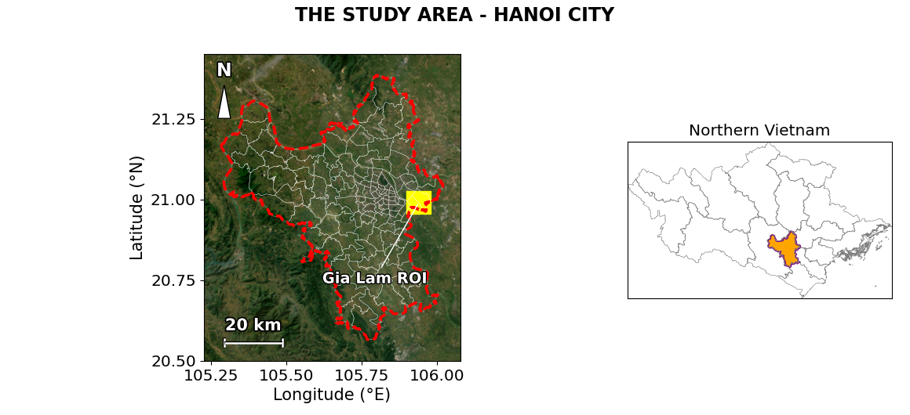
Where 3: Northern Vietnam
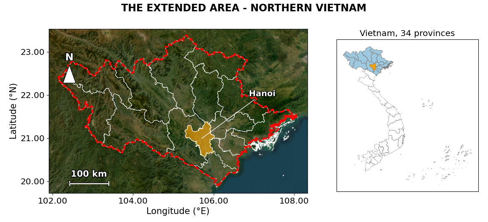
Scaling up: Gia Lam, Hanoi, Northern Vietnam
Scaling up: what gets harder
- More clouds: about 2.5 clear Landsat scenes per path/row in Northern Vietnam (May-Sep 2025), so few same-day comparisons
- Terrain: mountains change LST (elevation, slope, shadow); a DEM is needed to correct or stratify
- Land cover: crop calendars and Dynamic World accuracy differ between delta and mountains
- Validation: samples must be stratified by region, which costs more labelling time
- Local data: H3, H5 and H6 need lake, project and station data for each place
- Volume: about 1.16 billion pixels at 10 m, so summarise coarser or export tiles
Assumptions to verify when the pipeline is scaled up.
Hypotheses by scale
| Hypothesis | Gia Lam | Hanoi | N. Vietnam | |
|---|---|---|---|---|
| H1 | Conversion to built-up land | ● | ● | ● |
| H2 | Heat: converted vs control land | ● | ● | ○ |
| H3 | Cooling around new lakes | ● | – | – |
| H4 | Vegetation fragmentation | ● | ● | ○ |
| H5 | Conversion concentrated near projects | ● | – | – |
| H6 | Dust and construction | ○ | ○ | – |
● applies · ○ conditional (H2 in the north needs terrain correction; H6 needs enough stations) · – not applicable (needs local lake, project or station data)
Research question
Hypotheses H1, H2, H3
| ID | Hypothesis | Measure | Test |
|---|---|---|---|
| H1 | Most new built-up area of 2018-2025 comes from cropland | Transition matrix (ha, %) | 95% interval, area adjusted with a stratified sample |
| H2 | Converted pixels are hotter than stable cropland in the hot season | Landsat LST change, 2025 minus 2018 | Difference-in-differences with a control area, NDVI control |
| H3 | Around a new lake, LST falls with distance to the lake | LST in bands 0-100, 100-200, 200-400, 400-800 m | Regression with NDBI/NDVI, block bootstrap |
Every hypothesis can be rejected. H0: no difference, no effect.
Designs of H2 and H3
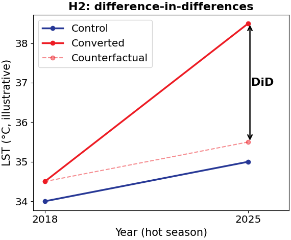
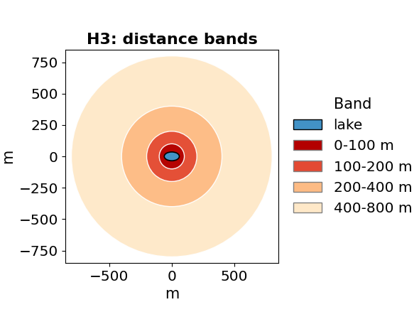
Principle: compare the change of treated land with the change of control land, and the heat gradient away from the lake.
Hypotheses H4 and H5
| ID | Hypothesis | Measure | Test |
|---|---|---|---|
| H4 | Remaining vegetation is more fragmented | Patch count, mean and largest patch | Same minimum mapping unit in both years; null model |
| H5 | Conversion is concentrated near projects | % converted by distance to project or road | Compared with random distances |
H0 of H4: no change compared with the null model. H0 of H5: conversion at random distances.
Hypothesis H6 and its go or stop gates
H6: PM2.5 and PM10 at a station are higher when more land around it is under construction (phase inferred from satellites), after controlling for weather and season.
May fail: no project timeline map, few stations near Gia Lam, traffic and straw-burning noise.
Valid outcomes: supported, rejected, or not testable (a finding about data gaps).
Dust is the exploratory part: it stops at gate A if G1 or G2 fails.
| Gate | Condition to test H6 |
|---|---|
| G1 | At least 3 stations within 10 km, 12+ months of data |
| G2 | Daily coverage above a threshold (about 70%) |
| G3 | Construction phase checked on about 30 historical-image points |
| G4 | Stations differ in construction phase |
How: from data to hypothesis tests
How H1 and H5: land-cover conversion
- 1 Dynamic World mean probabilities, same window every year (2017-2025)
- 2 Converted = built probability above 0.5 after and below 0.3 before; thresholds tested for sensitivity
- 3 Minimum mapping unit and majority filter; transition matrix in ha
- 4 Year of conversion from the annual series; UI and UX for comparison with P1
- 5 H5: share converted by distance to project or road, against random distances
From v1: steps 1-3. Borrowed from P1: UI and UX. New: distance test.
How H2: heat of converted land
- 1 Landsat 8/9 Level-2: LST = ST_B10 × 0.00341802 + 149.0 − 273.15 (scale read from metadata)
- 2 Mask QA_PIXEL bits 0-5; keep scenes with at least 80% valid pixels in the ROI
- 3 Window April-September (P4 used 28 April and 25 May)
- 4 Difference-in-differences: converted vs control cropland, 2025 minus 2018
- 5 Check with ERA5-Land air temperature on the scene dates (as in P4)
Expected size from P4: built-up about 6 °C above farmland on a single date.
How H3: cooling near new lakes
- 1 Lake polygons from Sentinel-1 and Sentinel-2, checked on historic imagery
- 2 Count the new lakes first: P2 found only 57 ha of new water in the whole district (2010-2020)
- 3 LST in bands 0-100, 100-200, 200-400, 400-800 m, water pixels removed (P3)
- 4 Regression with NDBI and NDVI, block bootstrap
- 5 With very few lakes the result is reported as a case study
How H4: vegetation fragmentation
- 1 Patches from trees, grass and shrub; cropland analysed separately
- 2 Same minimum mapping unit in both years
- 3 Patch count, mean patch, largest patch index, shape index (as in P6)
- 4 Compare with a null model; repeat at two unit sizes to show scale effects
How H6: dust near construction
- 1 PM2.5 and PM10 from stations; coverage starts in 2020-2021 (P5, Table 2)
- 2 Construction phase from the satellite series: farmland, bare land, built
- 3 Weather from ERA5; traffic from distance to major roads (P7)
- 4 Station fixed effects and block-wise errors
- 5 Gates G1 to G4; stop if fewer than 3 stations within 10 km
Window 2021-2025 instead of 2018-2025. P5 states that 1 km AOD cannot resolve construction sites.
How: old, borrowed and new
| Component | Source |
|---|---|
| Dynamic World series, thresholds, transition matrix | SAME AS v1 |
| Landsat scale, QA mask, DiD, distance bands | SAME AS v1 |
| UI and UX, ERA5 check, April window | BORROWED |
| Water pixels removed in regressions, lake count | BORROWED |
| Station window 2021-2025, road confounder | NEW |
| Area-adjusted estimates, blind labels | SAME AS v1 |
Planned data
| Data | Role | Main limit |
|---|---|---|
| Dynamic World (10 m) | Land cover, probabilities, conversions | Confuses vegetation classes; unvalidated |
| Sentinel-2 L2A | Visual reference, indices | Few clear scenes in winter-spring |
| Sentinel-1 (SAR) | Permanent water, flooded fields | Speckle; 2018 coverage to check |
| Landsat 8/9 C2 L2 | Hot-season LST | 100 m thermal; Landsat 9 only from 2022 |
| Historical high-res imagery | Validation reference | Manual labelling |
| PM2.5/PM10 stations, ERA5 | H6 response and weather | Station count and coverage unknown |
Satellite scenes available over the ROI
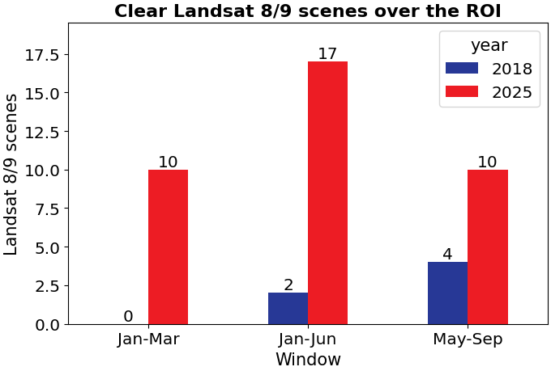
| Window | 2018 | 2025 |
|---|---|---|
| Jan-Mar | 5 | 6 |
| Jan-Jun | 16 | 9 |
| May-Sep | 16 | 5 |
- No clear Landsat scene in Jan-Mar 2018: heat needs the hot season
- Hot season 2018: only 4 scenes (15 May, 7 Jun, 2 Jul, 4 Sep)
- Counts use whole-scene cloud; clear pixels inside the ROI are fewer
Technical test: Landsat LST over the ROI
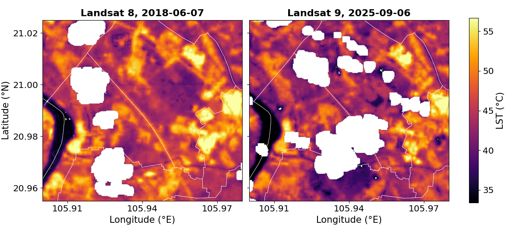
Tools and libraries
| Step | Tools | Status |
|---|---|---|
| Land cover, conversions | Google Earth Engine (JavaScript) | Starter script written, not run |
| Search and read imagery | pystac-client, planetary-computer, rasterio | Used (Notebooks 02, 03, 05) |
| Boundaries and maps | geopandas, shapely, contextily, matplotlib | Used (Notebook 01) |
| Validation | numpy, pandas, scikit-learn | Run on synthetic data (Notebook 04) |
| Regression, patches | statsmodels, scipy.ndimage | Planned |
| Command-line GDAL, QGIS | GDAL, QGIS | GDAL broken, QGIS not installed |
Validation design
- Stratified random sample by map class, 250-400 points, labelled blind on historical imagery; all three members label a shared subset (kappa)
- Report area-adjusted estimates with 95% intervals (Olofsson et al. 2014), not raw map areas

Research plan
| Item | Plan |
|---|---|
| People | 3 students, equal share; about 34 hours each over 8 days (a guess) |
| Data and tools | Free; PM stations and ERA5 need a free key or account |
| Computing | Laptops and Earth Engine in the browser; the 64 km² ROI is small |
| Biggest risks | Few clear 2018 Landsat scenes; too few stations for H6; labelling time |
| Gate A (evening 20 Oct) | Fix ROI, control, windows; count stations. If failed, stop H6 |
| Gate B (22 Oct) | Thresholded conversion map and first validation. If failed, cut H4 and H5 |
| Gate C (24 Oct) | H1-H3 results; from 25 Oct only report and slides |
Team tasks (proposal)
| Role | Member (student ID) | Main task |
|---|---|---|
| A | Nguyen Minh Anh (2540032) | Land cover and conversion: H1, H5 |
| B | Trương Tuấn Nghĩa (2540017) | Water and Sentinel-1: H3 |
| C | Hoang Ha Dang (2540028) | Heat: H2 |
Schedule, 19-26 October
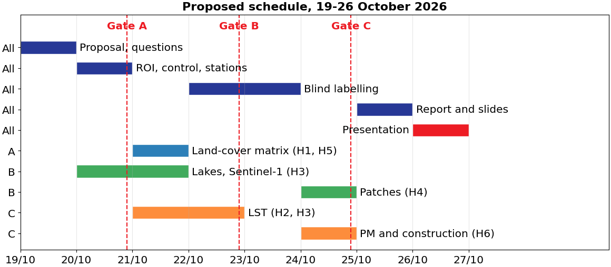
Questions for the lecturers
- How much LLM use (search, debugging, explanations) is acceptable, and how to state it in the report
- Presentation length and expected slide structure
- English or Vietnamese for the report and slides
- May we use Earth Engine and Planetary Computer besides the platforms shown in class
- Is the report due at the same time as the presentation on 26 Oct
- Which source gives start and end dates of construction projects in Hanoi, and which dust stations are near Gia Lam
- Start of the practical week: the brief says Monday 18 Oct, which is a Sunday in 2026
THANK YOU
QUESTIONS
Gia Lam, Hanoi, 2018-2025